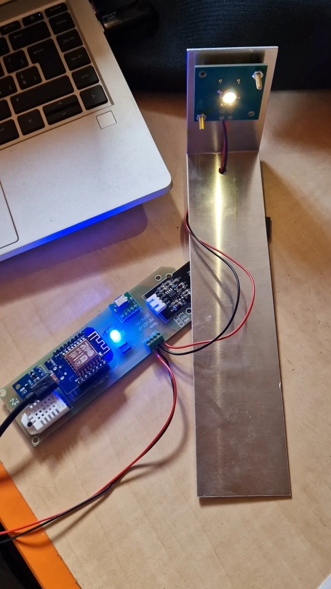
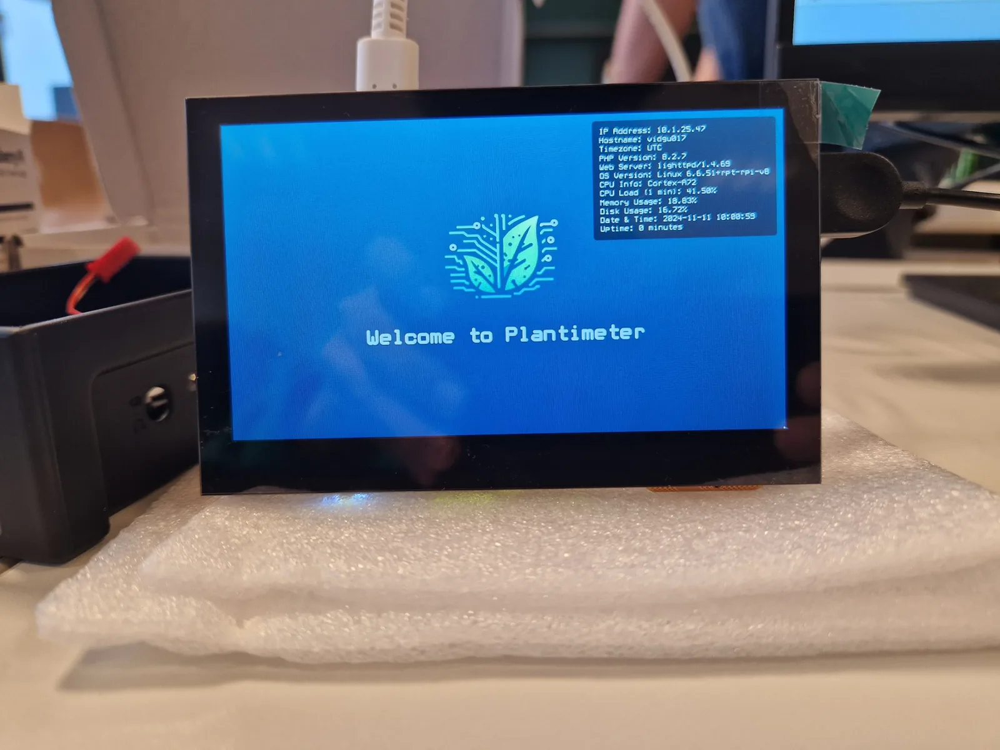
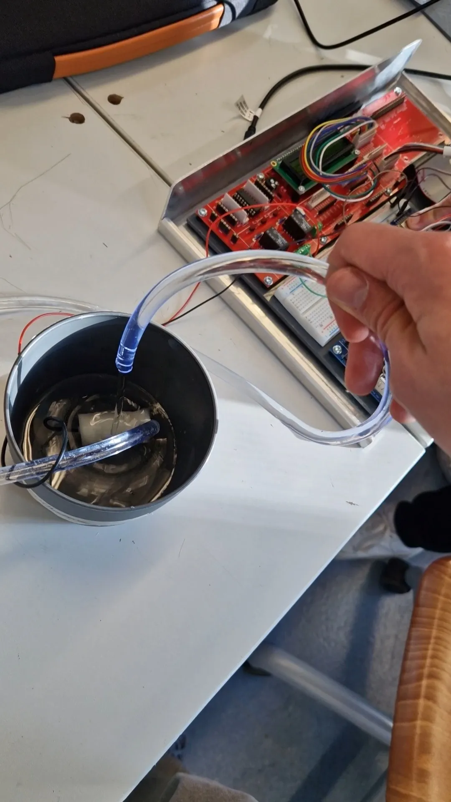
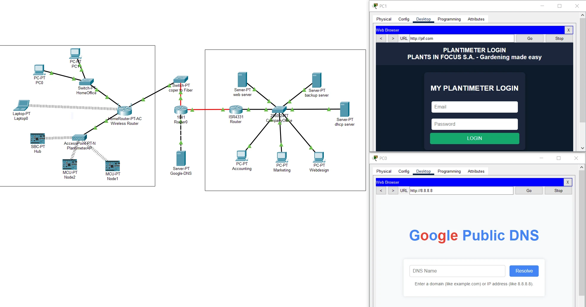

The "Plantimeter" System
This was my PIF (Projet Intégré Final) — the capstone project for my Computer Technician diploma. I built a complete IoT plant monitoring and automation system from scratch: hardware nodes, firmware, backend server, web dashboard, and enterprise networking.

ESP8266 sensor node: Wemos D1 Mini with DHT22, BH1750, SEN0193 sensors and a grow light

The Raspberry Pi 4 hub running the touchscreen kiosk interface

The automated watering mechanism, driven by the soil-moisture sensor

The whole network — including the simulated internet/ISP side — designed and tested in Cisco Packet Tracer: the home network (IoT nodes, PlantimeterAP) connects to the company office (servers, VLANs) through an ISR4331 router, with DNS routing to Google Public DNS.
What Runs On It
Four layers, built and wired together by hand: the sensor node and its firmware, the Raspberry Pi web platform, an automated backup server, and the enterprise network that ties them together.
Sensor Node & Firmware
- Environmental Sensing: Measures soil moisture, air temperature, humidity, and ambient light using calibrated sensors.
- Automated Watering: Triggers the water pump based on soil moisture thresholds or scheduled tasks.
- Grow Light Control: Activates 1W LED when light levels drop below optimal range.
- MAC-address auth & 80°C safety cutoff: each node identifies itself by MAC address before syncing, and the firmware force-stops the heater at 80°C.
Hub Server & Web Platform
- Web Dashboard: Admin panel with real-time charts (ApexCharts), task scheduling, user management, and plant variations.
- Dynamic Backend: PHP API-driven architecture for real-time updates, log history viewer, and seamless data management.
- User Experience: Login security, separated user/admin views, fuzzy search throughout, and modals for improved workflow.
- Touch Kiosk UI: Optimized interface for the Raspberry Pi touchscreen display, designed for better usability despite the small screen size.
Backup & Recovery
- Receives daily backups via rsync over SSH. Stores database dumps, logs, and web content with 30-day rotation.
- Mirrored RAID1 storage: two 30 GB disks mirror each other, so a single drive failure loses no data.
- Fully automated: a scheduled Bash job runs every night, keeps a 30-day rotation, and logs every run.
Enterprise Network & Security
- Company Network: VLANs (10/20), DHCP server, ISR4331 router with NAT/PAT and ACLs.
- Home Network: Separate WLAN for nodes (PlantimeterAP) with WPA2-PSK, routed to the company network.
- ISP Simulation: Dedicated router simulating internet provider with DNS (Google 8.8.8.8) and fiber link.
- Security: Port-based ACLs, NAT for web/FTP access, proper routing tables.
- Gigabit Architecture: Full Gigabit speeds throughout. Implemented copper-to-fiber converter bridge where router interfaces couldn't connect directly, maintaining performance.
- Server hardening: SSL/TLS, Fail2Ban, a UFW firewall and prepared statements protect the hub against intrusion and SQL injection.
The whole network — including the simulated internet/ISP side — designed and tested in Cisco Packet Tracer: the home network (IoT nodes, PlantimeterAP) connects to the company office (servers, VLANs) through an ISR4331 router, with DNS routing to Google Public DNS.
Why I Built It
This was my final exam project for the Computer Technician diploma. It had to demonstrate skills across hardware, software, networking, and documentation. I chose to go beyond the requirements — implementing "Should" and "Could" features, plus my own innovations like fuzzy search and an 80°C safety cutoff.
The project was developed in sprints (A1–A7 for hardware/firmware, L1–L7 for server/network), each with clear goals, tests, and documented difficulties. The final documentation was over 100 pages.
Lessons Learned
Hardware debugging is humbling
Swapped resistors, wrong-pin soldering and sensor calibration taught me patience and attention to detail.
Full-stack means full responsibility
From PCB to PHP, every layer had to work together — one bug anywhere breaks everything.
Documentation is a skill
Writing 100+ pages of structured documentation with user stories, diagrams and test results was as challenging as the code.
Security matters from day one
Fail2Ban, SSL, UFW and prepared statements taught me to think about security at every layer.